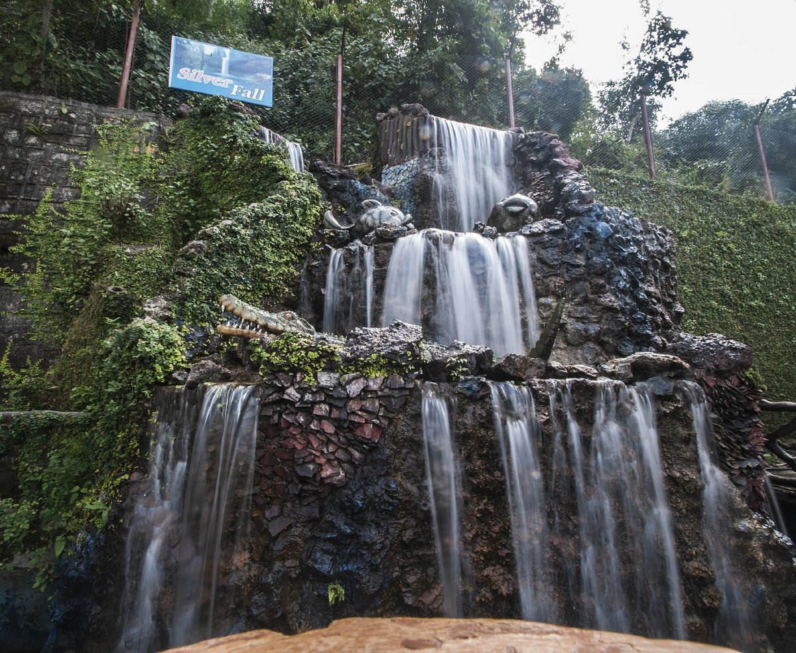
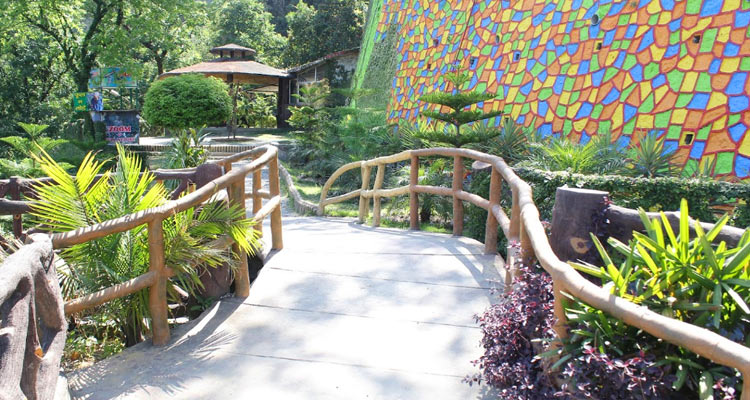
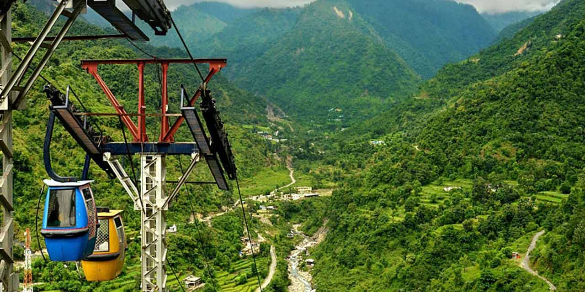
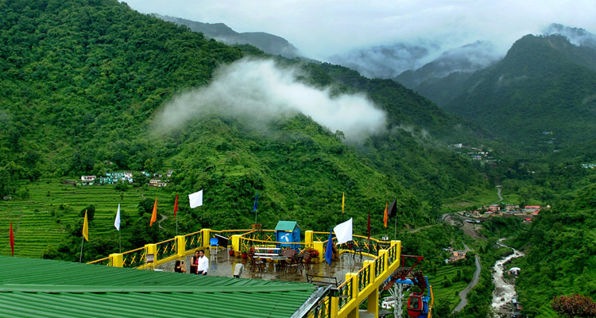

Sahastradhara, meaning "Thousand Fold Spring," is one of the most famous natural attractions in Dehradun, located about 14 km from the city center in the foothills of the Shivalik range. The name comes from the numerous tiny waterfalls and springs that drip continuously from the limestone rocks, creating a mystical and refreshing atmosphere. The water here is rich in sulphur and other minerals, believed to have therapeutic properties for skin diseases, joint pains, and overall health — making it a popular spot for both locals and tourists seeking natural healing.
Surrounded by lush greenery, rocky cliffs, and the soothing sound of cascading water, Sahastradhara offers a serene escape from city life. The main cave-like area has dripping springs forming small pools, while the nearby picnic spots, ropeway ride (offering panoramic valley views), and small Shiva temple add to the charm. In the evening, the place lights up with colorful lights, and the mist from the falls creates a magical, almost ethereal vibe — perfect for photography, relaxation, and family outings in the Doon Valley.
October to March for pleasant weather and clear views; early morning or late afternoon to avoid crowds and enjoy the misty falls in golden light.
Sulphur-rich healing springs, continuous dripping waterfalls, scenic ropeway ride, small Shiva temple, picnic spots, lush greenery, and evening light show.
Wear comfortable non-slip shoes (area can be slippery), carry water and light snacks, take the ropeway for best views, avoid monsoon if roads are slippery, and dip feet in the pools for natural therapy.
"Sahastradhara is where a thousand gentle streams whisper healing secrets from the heart of the hills — a natural sanctuary of peace, wellness, and timeless beauty in Dehradun’s embrace."